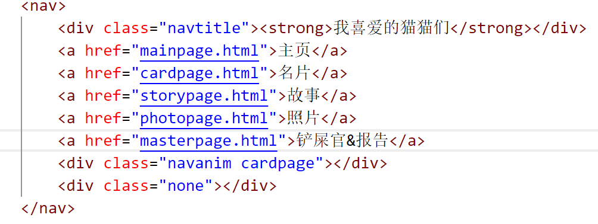
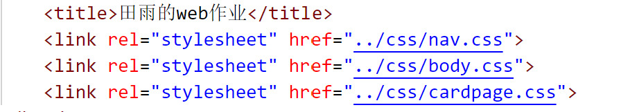
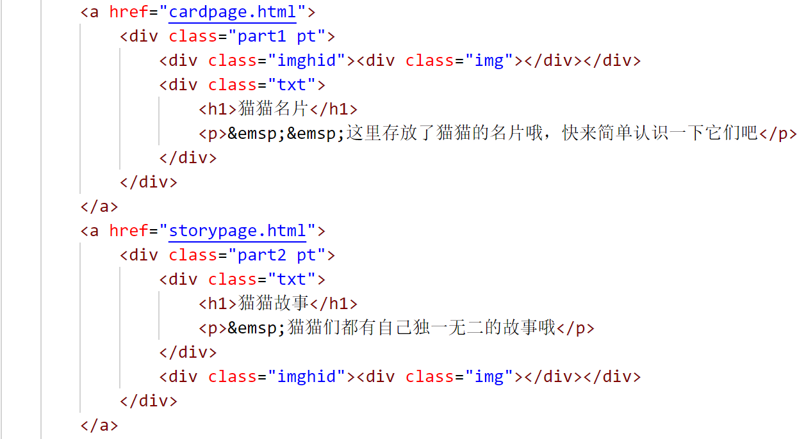
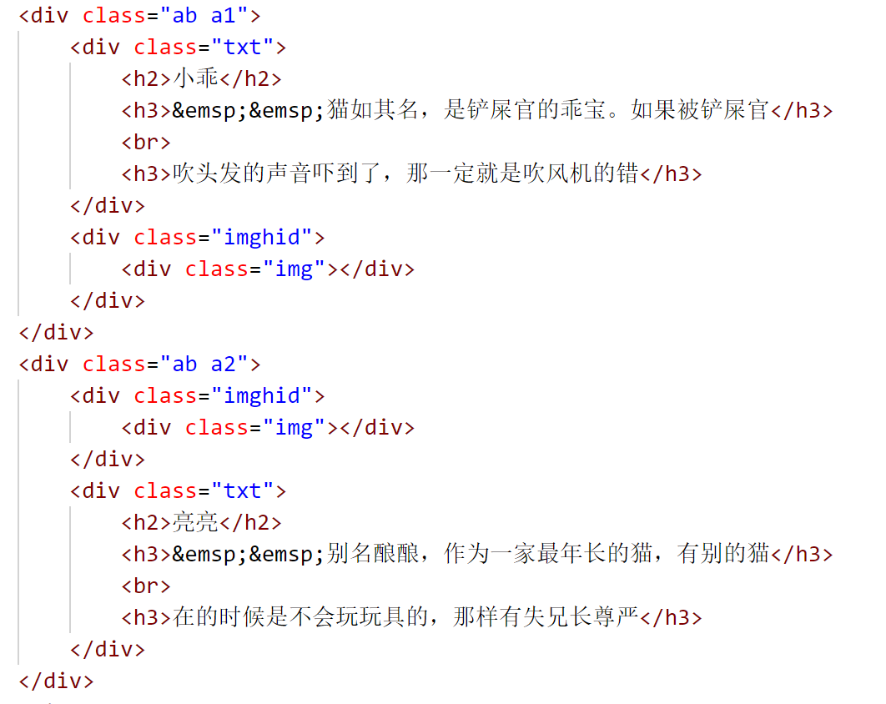
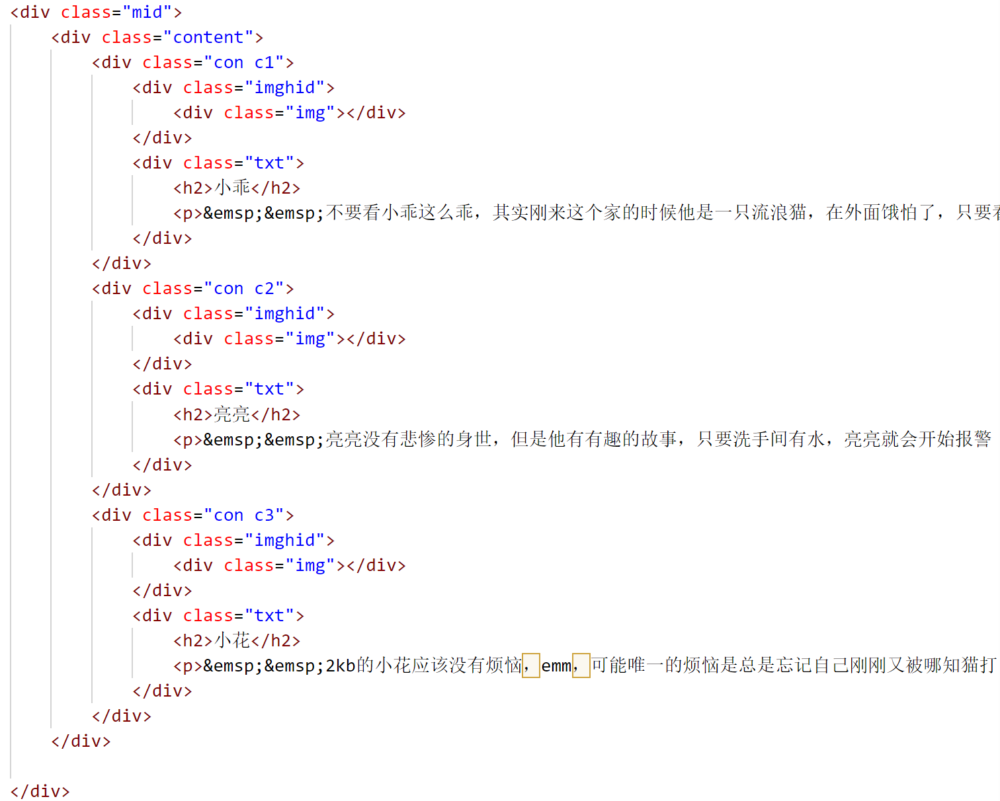
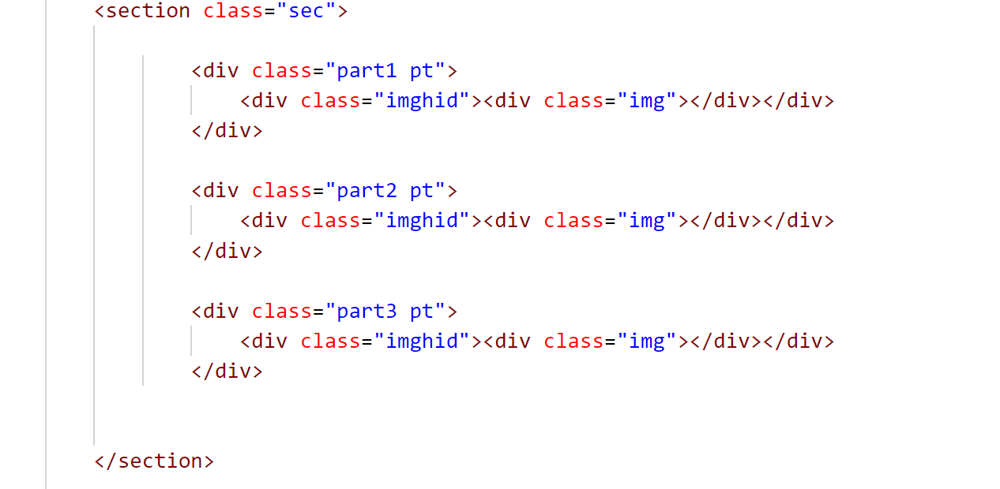

A. 静态网站: 采用纯 CSS 或你喜欢的任何 CSS 框架如 Bootstrap、MDB、Tailwind 等构建一个主题自选且不少于5个页面（Web Page）的网站
B. 动态网站: 使用任何一个前端框架如 Angular 等进行某应用（如英雄之旅、代办事项、图书管理等）的开发，需要有 CRUD 即增删改查功能并有一定的样式
实验选题有A、B两个，在这里我选择自己做一个静态网站，并以我喜欢的宠物up主的几只猫为主题来建立静态网站
网页的头部设计主要由导航条组成，导航条使用了nav标签，其中我们通过超链接的形式来实现不同界面之间的跳转
效果如图所示
通过将背景图片放在css文件里面，因此对于其他的html文件，只需要使用link标签就能将该图片设置为所有界面的背景图
本部分的功能主要是显示后面几个网页的内容，并且点击之后能进行跳转，跳到选中的网页
本部分主要是展示了三只猫的基本信息，大致的实现如下所示
本部分主要是展示了三只猫的不同的一些故事，大致的实现如下所示
本部分主要是展示了三只猫的一些表情包的图片，大致的实现如下所示
通过上网查询，得知可以用github对静态网页进行托管服务，大致流程是：
1.创建自己的github账号
2.新建一个repository
3.新建一个html文件测试
4.点击settings然后选择左侧的pages，然后选择main并点击save即可生成一段网址
通过一个学期的学习，在老师的指导下我学习了有关html、css、js等很多知识，有一些知识对于我来说还是有难度的,html和css的一些标签虽然看起来 很简单，但是只有在实际制作网页的过程中我们才能真正学会如何熟练的去使用它们制作网页。通过这次实验，我对于css和html的知识掌握得更加牢固，也了解到了静态网页和 动态网页这两种网页的不同，收获颇丰。